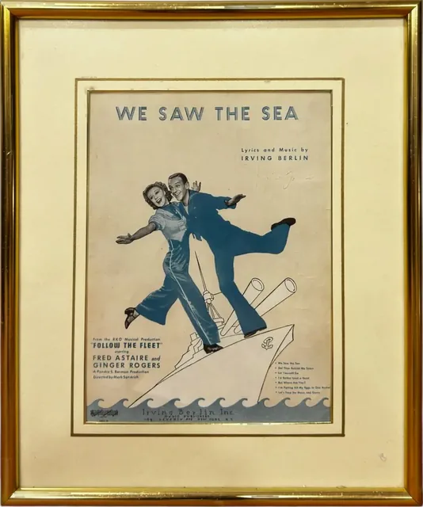
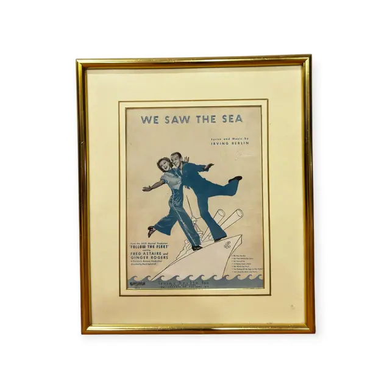
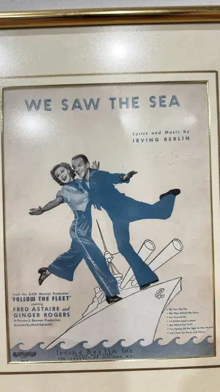
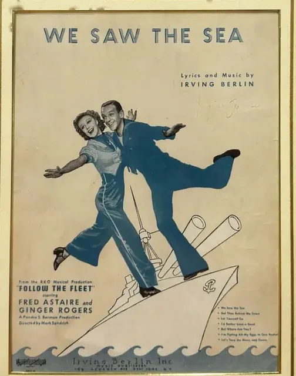
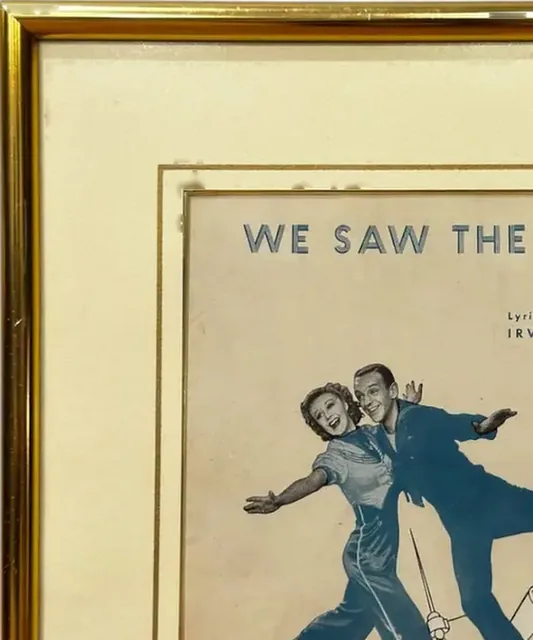
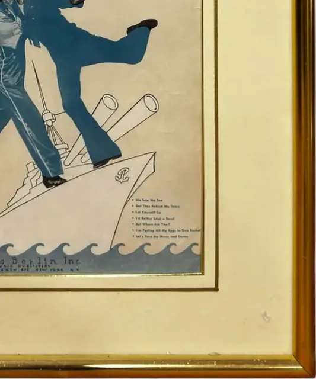
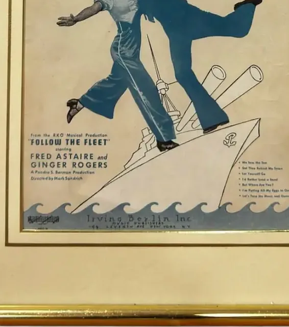
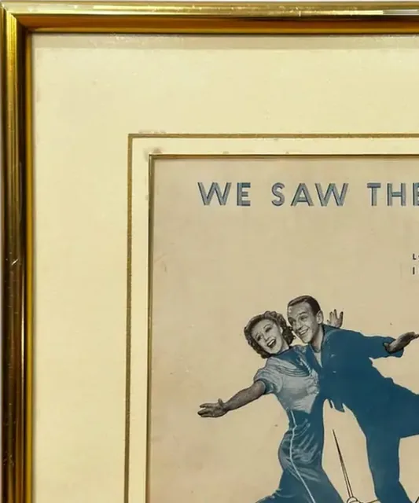
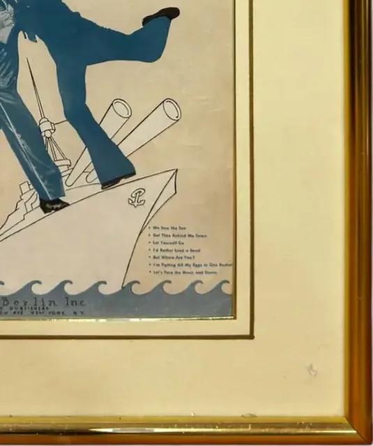

Documents
'We Saw the Sea' Follow the Fleet Sheet Music, Signed, Framed, 1936
· 1936 (Follow the Fleet was released that year)
Price Upon Request










About the Item
An Art Deco sheet-music cover printed in two colours, steel blue on cream. Fred Astaire in sailor whites and bell-bottoms and Ginger Rogers in a nautical blouse are shown mid-step with arms flung wide, balanced on the bow of a battleship above a band of stylised blue waves. The title is set in wide spaced sans-serif capitals across the top, with the credits and song list ranged below in small blue type. Medium: lithographed sheet music cover on paper. Signed upper right of the sheet, in faint pencil below the composer credit. Inscribed on the reverse or mount: WE SAW THE SEA; Lyrics and Music by IRVING BERLIN; From the RKO Musical Production "FOLLOW THE FLEET" starring FRED ASTAIRE and GINGER ROGERS; A Pandro S. Berman Production. Condition: The paper has toned to a warm tan with darker mottling across the upper area and along the edges, consistent with age; a faint pencil inscription sits at the upper right. No tears are visible through the glass.
Details
- Creation Year:
- 1936 (Follow the Fleet was released that year)
- Dimensions:
- Height: 18.25 in (46.36 cm)
Width: 15.25 in (38.73 cm)
outside of frame - Medium:
- lithographed sheet music cover on paper
- Period:
- 20Th
- Condition:
- Offered in the condition shown in the photographs.
- Reference Number:
- VO-195
- Documentation:
- no certificate seen
- Gallery Location:
- WE SAW THE SEA; Lyrics and Music by IRVING BERLIN; From the RKO Musical Production "FOLLOW THE FLEET" starring FRED ASTAIRE and GINGER ROGERS